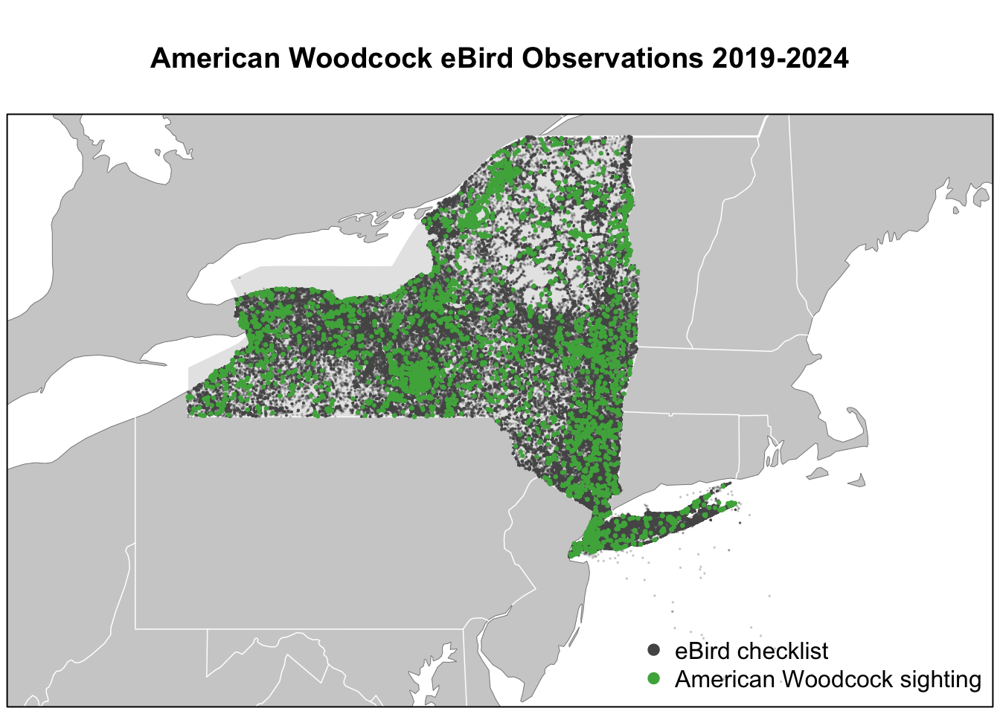

library(auk)
library(dplyr)
library(ggplot2)
library(gridExtra)
library(lubridate)
library(readr)
library(sf)The raw data from eBird has 2,276,777 observations for the sampling data (meaning all checklists in New York state from January 2019 to January 2024) and 13,748 woodcock observations in New York state in the same time frame. There are also a large number of categorical data.
# observation data
amwo <- "data/ebd_US-NY_amewoo_201901_202401_smp_relSep-2024.txt"
# checklist data
amwo_samp <- "data/ebd_US-NY_amewoo_201901_202401_smp_relSep-2024_sampling.txt"
# downloaded from https://drive.google.com/drive/u/0/folders/1Ui7op-20dxaKV9Bpibyv5otlqgyZTty-
# add the .txt file into your local ./data folder
checklists <- read_sampling(amwo_samp) # the 600MB file will take a while to load
glimpse(checklists)## Rows: 2,276,777
## Columns: 31
## $ checklist_id <chr> "S60410417", "S60409292", "S60410856", "S604…
## $ last_edited_date <chr> "2021-11-09 21:15:44.959662", "2022-10-21 03…
## $ country <chr> "United States", "United States", "United St…
## $ country_code <chr> "US", "US", "US", "US", "US", "US", "US", "U…
## $ state <chr> "New York", "New York", "New York", "New Yor…
## $ state_code <chr> "US-NY", "US-NY", "US-NY", "US-NY", "US-NY",…
## $ county <chr> "Ulster", "Otsego", "Schuyler", "Schuyler", …
## $ county_code <chr> "US-NY-111", "US-NY-077", "US-NY-097", "US-N…
## $ iba_code <chr> NA, NA, NA, NA, NA, NA, NA, NA, "US-NY_2792"…
## $ bcr_code <int> 13, 28, 28, 13, 28, 28, 30, 13, 28, 30, 30, …
## $ usfws_code <chr> NA, NA, NA, NA, NA, NA, NA, NA, NA, NA, NA, …
## $ atlas_block <chr> NA, NA, NA, NA, NA, NA, NA, NA, NA, NA, NA, …
## $ locality <chr> "Mall", "West Main Street ,Morris,NY", "Stea…
## $ locality_id <chr> "L10000448", "L10000309", "L10000499", "L100…
## $ locality_type <chr> "P", "P", "P", "P", "P", "P", "P", "P", "P",…
## $ latitude <dbl> 41.96585, 42.54558, 42.38840, 42.35100, 42.3…
## $ longitude <dbl> -73.97731, -75.25157, -76.76212, -76.84415, …
## $ observation_date <date> 2019-10-06, 2019-10-04, 2019-10-06, 2019-10…
## $ time_observations_started <chr> NA, "17:20:00", "09:01:00", "11:15:00", "14:…
## $ observer_id <chr> "obsr1127554", "obsr375393", "obsr295684", "…
## $ sampling_event_identifier <chr> "S60410417", "S60409292", "S60410856", "S604…
## $ protocol_type <chr> "Incidental", "Incidental", "Traveling", "Tr…
## $ protocol_code <chr> "P20", "P20", "P22", "P22", "P21", "P21", "P…
## $ project_code <chr> "EBIRD", "EBIRD", "EBIRD", "EBIRD", "EBIRD",…
## $ duration_minutes <int> NA, NA, 50, 52, 6, 7, 5, 1, 20, NA, 15, 30, …
## $ effort_distance_km <dbl> NA, NA, 3.059, 1.609, NA, NA, NA, NA, NA, NA…
## $ effort_area_ha <dbl> NA, NA, NA, NA, NA, NA, NA, NA, NA, NA, NA, …
## $ number_observers <int> NA, 1, 1, 1, 1, 1, 2, 1, 1, 1, 1, 1, 1, 3, 1…
## $ all_species_reported <lgl> FALSE, FALSE, TRUE, TRUE, TRUE, TRUE, TRUE, …
## $ group_identifier <chr> NA, NA, NA, NA, NA, NA, NA, NA, NA, NA, NA, …
## $ trip_comments <chr> NA, NA, "Steam Mill Rd. From Carley to the p…observations <- read_ebd(amwo)
glimpse(observations)## Rows: 13,748
## Columns: 48
## $ checklist_id <chr> "G10001395", "G10004562", "G10006357", "G100…
## $ global_unique_identifier <chr> "URN:CornellLabOfOrnithology:EBIRD:OBS168599…
## $ last_edited_date <chr> "2023-04-15 11:23:38.035561", "2023-10-24 13…
## $ taxonomic_order <dbl> 6031, 6031, 6031, 6031, 6031, 6031, 6031, 60…
## $ category <chr> "species", "species", "species", "species", …
## $ taxon_concept_id <chr> "avibase-F4829920", "avibase-F4829920", "avi…
## $ common_name <chr> "American Woodcock", "American Woodcock", "A…
## $ scientific_name <chr> "Scolopax minor", "Scolopax minor", "Scolopa…
## $ exotic_code <chr> NA, NA, NA, NA, NA, NA, NA, NA, NA, NA, NA, …
## $ observation_count <chr> "1", "1", "4", "1", "2", "5", "2", "1", "1",…
## $ breeding_code <chr> NA, NA, "C ", "H ", NA, "C ", "C ", "C ", "S…
## $ breeding_category <chr> NA, NA, "C3", "C2", NA, "C3", "C3", "C3", "C…
## $ behavior_code <chr> NA, NA, "C ", "H ", NA, "C ", "C ", "C ", "S…
## $ age_sex <chr> NA, NA, NA, NA, NA, NA, NA, NA, NA, NA, NA, …
## $ country <chr> "United States", "United States", "United St…
## $ country_code <chr> "US", "US", "US", "US", "US", "US", "US", "U…
## $ state <chr> "New York", "New York", "New York", "New Yor…
## $ state_code <chr> "US-NY", "US-NY", "US-NY", "US-NY", "US-NY",…
## $ county <chr> "Albany", "Chemung", "Monroe", "Monroe", "Er…
## $ county_code <chr> "US-NY-001", "US-NY-015", "US-NY-055", "US-N…
## $ iba_code <chr> NA, NA, "BIRDLIFE_26109|US-NY_1723", NA, "US…
## $ bcr_code <int> 13, 28, 13, 13, 13, 13, 13, 14, 13, 13, 13, …
## $ usfws_code <chr> NA, NA, NA, NA, NA, NA, NA, NA, NA, NA, NA, …
## $ atlas_block <chr> "42073E8NE", NA, "43077C6CW", "43077B5SE", N…
## $ locality <chr> "Five Rivers EEC", "The Schoolhouse", "Bradd…
## $ locality_id <chr> "L213239", "L24332414", "L390730", "L392124"…
## $ locality_type <chr> "H", "P", "H", "H", "H", "P", "P", "P", "P",…
## $ latitude <dbl> 42.61000, 42.06903, 43.32014, 43.14913, 42.8…
## $ longitude <dbl> -73.89077, -76.93469, -77.72643, -77.51756, …
## $ observation_date <date> 2023-04-15, 2023-04-15, 2023-04-15, 2023-04…
## $ time_observations_started <chr> "09:49:00", "17:13:00", "20:11:00", "12:32:0…
## $ observer_id <chr> "obsr839489,obsr2659179,obsr2179341", "obsr1…
## $ sampling_event_identifier <chr> "S133826157,S133826160,S133826162", "S133879…
## $ protocol_type <chr> "Traveling", "Traveling", "Traveling", "Trav…
## $ protocol_code <chr> "P22", "P22", "P22", "P22", "P22", "P21", "P…
## $ project_code <chr> "EBIRD_ATL_NY", "EBIRD", "EBIRD_ATL_NY", "EB…
## $ duration_minutes <int> 93, 30, 31, 50, 176, 105, 11, 26, 30, 67, 15…
## $ effort_distance_km <dbl> 3.701, 0.805, 1.236, 1.609, 2.866, NA, NA, N…
## $ effort_area_ha <dbl> NA, NA, NA, NA, NA, NA, NA, NA, NA, NA, NA, …
## $ number_observers <int> 3, 2, 3, 2, 2, 2, 2, 2, 4, 3, 2, 2, 3, 2, 2,…
## $ all_species_reported <lgl> TRUE, TRUE, TRUE, TRUE, TRUE, TRUE, TRUE, TR…
## $ group_identifier <chr> "G10001395", "G10004562", "G10006357", "G100…
## $ has_media <lgl> FALSE, FALSE, TRUE, FALSE, FALSE, FALSE, FAL…
## $ approved <lgl> TRUE, TRUE, TRUE, TRUE, TRUE, TRUE, TRUE, TR…
## $ reviewed <lgl> FALSE, FALSE, FALSE, FALSE, FALSE, FALSE, FA…
## $ reason <chr> NA, NA, NA, NA, NA, NA, NA, NA, NA, NA, NA, …
## $ trip_comments <chr> NA, NA, "Warm and calm. 59F. A few scattered…
## $ species_comments <chr> NA, NA, NA, NA, "South end of Snakeroot Trai…Exclude non-complete checklists:
checklists <- checklists |>
filter(all_species_reported)
observations <- observations |>
filter(all_species_reported)eBird has the ability to transform the data to produce detection/non-detection data (also called presence/absence data). With presence-only data, but no information of the amount of search effort expended to produce that data, it is difficult to estimate or predict how common a species is.
“Zero-filling” the data process: for complete checklists, information about non-detections can be inferred from the SED: if there is a record in the SED but no record for a species in the EBD, then a count of zero individuals of that species can be inferred.
observations <- observations %>%
filter(checklist_id %in% checklists$checklist_id)
zf <- auk_zerofill(observations, checklists, collapse = TRUE)Before continuing, we’ll transform some of the variables to a more useful form for modelling. We convert time to a decimal value between 0 and 24, force the distance traveled to 0 for stationary checklists, and create a new variable for speed.
# function to convert time observation to hours since midnight
time_to_decimal <- function(x) {
x <- hms(x, quiet = TRUE)
hour(x) + minute(x) / 60 + second(x) / 3600
}
# clean up variables
zf <- zf |>
mutate(
# convert count to integer and X to NA
# ignore the warning "NAs introduced by coercion"
observation_count = as.integer(observation_count),
# effort_distance_km to 0 for stationary counts
effort_distance_km = if_else(protocol_type == "Stationary",
0, effort_distance_km),
# convert duration to hours
effort_hours = duration_minutes / 60,
# speed km/h
effort_speed_kmph = effort_distance_km / effort_hours,
# convert time to decimal hours since midnight
hours_of_day = time_to_decimal(time_observations_started),
# split date into year and day of year
year = year(observation_date),
day_of_year = yday(observation_date)
)## Warning: There was 1 warning in `mutate()`.
## ℹ In argument: `observation_count = as.integer(observation_count)`.
## Caused by warning:
## ! NAs introduced by coercionAccounting for variation in effort: restricting checklists to traveling or stationary counts less than 6 hours in duration and 10 km in length, at speeds below 100km/h, and with 10 or fewer observers.
# additional filtering
zf_filtered <- zf |>
filter(protocol_type %in% c("Stationary", "Traveling"),
effort_hours <= 6,
effort_distance_km <= 10,
effort_speed_kmph <= 100,
number_observers <= 10)Here, we will project all the observational and sampling data onto a New York state map using GIS data.
# load gis data
ne_land <- read_sf("data/gis-data.gpkg", "ne_land") |>
st_geometry()
ne_country_lines <- read_sf("data/gis-data.gpkg", "ne_country_lines") |>
st_geometry()
ne_state_lines <- read_sf("data/gis-data.gpkg", "ne_state_lines") |>
st_geometry()
study_region <- read_sf("data/gis-data.gpkg", "ne_states") |>
filter(state_code == "US-NY") |>
st_geometry()
# prepare ebird data for mapping
checklists <- zf_filtered |>
select(checklist_id, observer_id,
observation_count, species_observed,
state_code, locality_id, latitude, longitude,
protocol_type, all_species_reported,
observation_date, year, day_of_year,
hours_of_day,
effort_hours, effort_distance_km, effort_speed_kmph,
number_observers)
checklists_sf <- checklists |>
# convert to spatial points
st_as_sf(coords = c("longitude", "latitude"), crs = 4326) |>
select(species_observed)
# map
par(mar = c(0.25, 0.25, 4, 0.25))
# set up plot area
plot(st_geometry(checklists_sf),
main = "American Woodcock eBird Observations 2019-2024",
col = NA, border = NA)
# contextual gis data
plot(ne_land, col = "#cfcfcf", border = "#888888", lwd = 0.5, add = TRUE)
plot(study_region, col = "#e6e6e6", border = NA, add = TRUE)
plot(ne_state_lines, col = "#ffffff", lwd = 0.75, add = TRUE)
plot(ne_country_lines, col = "#ffffff", lwd = 1.5, add = TRUE)
# ebird observations
# not observed
plot(filter(checklists_sf, !species_observed),
pch = 19, cex = 0.1, col = alpha("#555555", 0.25),
add = TRUE)
# observed
plot(filter(checklists_sf, species_observed),
pch = 19, cex = 0.3, col = alpha("#4daf4a", 1),
add = TRUE)
# legend
legend("bottomright", bty = "n",
col = c("#555555", "#4daf4a"),
legend = c("eBird checklist", "American Woodcock sighting"),
pch = 19)
box()